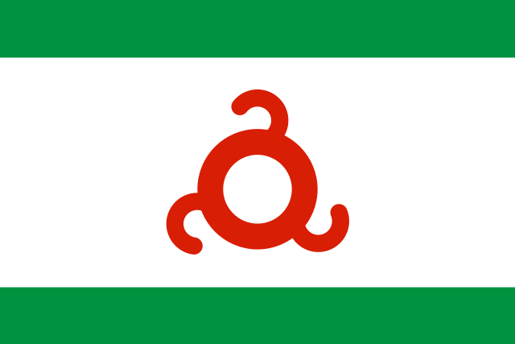
дoбро пожаловать в Республику Ингушетию
Маьрша дог1алда шo
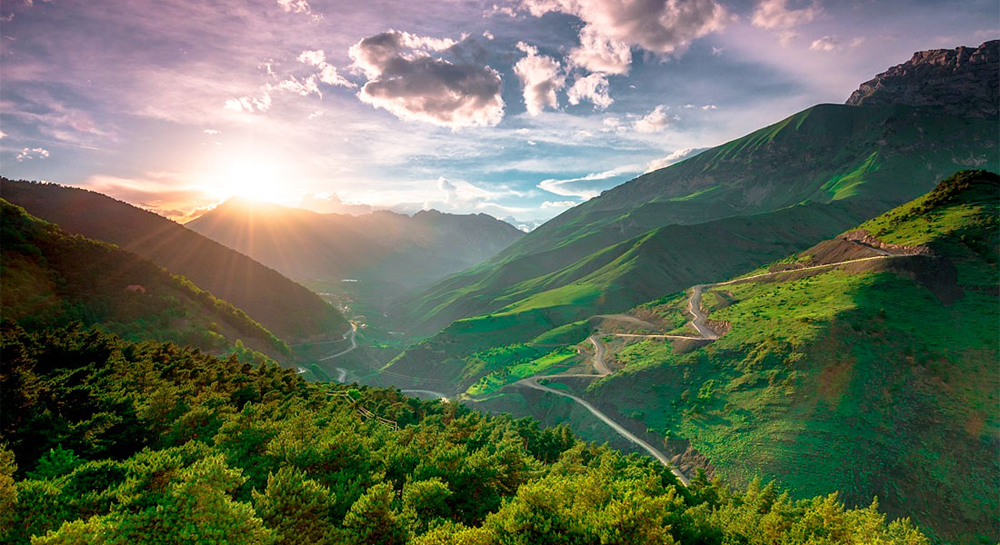
Небольшая по размерам, но очень живописная республика Ингушетия расположена в северных районах Кавказа. Горные курорты, ущелья, водопады и природные заповедники составляют основное ее богатство. Но в число главных достопримечательностей Ингушетии также входят удивительные памятники культуры: башенные комплексы, монастыри, храмы и мемориалы.
Приятными бонусами для путешественников станут чудесный высокогорный климат и целебный воздух, не уступающий по свойствам лучшим курортам швейцарских Альп.
Башенный комплекс Вовнушки
Этот средневековый архитектурный и природный памятник также расположен в Джейрахском районе. Название буквально означает «место оборонительных башен». Благодаря особенностям северокавказского ландшафта такие фортификационные сооружения становились оптимальным способом обороны. Вокруг них со временем вырастали целые селения.
Комплекс Вовнушки, впрочем, выделяется даже на фоне не менее впечатляющих памятников такого типа. Он включает три башни: две на одной скале, одна на противоположной. Они настолько удачно вписаны в рельеф, что кажутся продолжением скал. Башни четырехгранные, сложены из камня. В стенах пробиты узкие бойницы. Очарованию старинных сооружений способствует и живописная горная местность, в которой они расположены.
Адрес: Башенный комплекс Вовнушки, Ингушетия, Россия.

Храм Тхаба-ерды

Недалеко от границы между Ингушетией и Грузией расположен старинный христианский храм. Точно не известно, кто и когда его построил. Впервые описана святыня была в конце XVIII в.
В архитектурном плане базилика совмещает черты зодчества Грузии и Ингушетии. Предположительно, заложен храм был в VIII в., а позже многократно достраивался и видоизменялся. В длину сооружение составляет 17 метров и завершается традиционной апсидой с восточной стороны. Храм украшен рельефами и декоративными элементами.
На территории святилища проходили археологические раскопки. Были обнаружены каменные плиты с декором, продолжения стен и следы пилястр.
Адрес: “Тхаба-ерды”, Таргим, Республика Ингушетия, Россия.
Башенный комплекс Эгикал
Один из крупнейших башенных комплексов республики находится в Ассинском ущелье. Это то, что следует посмотреть в Ингушетии каждому туристу. Уже в XII в. здесь селились люди, постепенно превращая Эгикхал в крупный культурный центр. Они славились гончарным и оружейным ремеслом, отлично разбирались в народной медицине, умели прекрасно строить.
Все жилые и оборонительные башни комплекса возводились из камня, по циклопической технологии. Она заключается в том, что камни и глыбы соединялись между собой без использования скрепляющего раствора. Каждая башня принадлежала определенной династии или роду. Благодаря расположению и архитектурным особенностям, строения могли выдерживать длительную осаду.
Адрес: Эгикал, Ингушетия, Россия.

Башенный комплекс Цори

Данный комплекс назван в честь одноименного аула и датирован XII-XVII вв. Когда-то селение Цори было основным центром округи, ядром, вокруг которого объединялись разрозненные общины-тейпы.
Комплекс включат три боевых башни и около двадцати жилых, а также могильники и хозяйственные пристройки. Все сооружения имеют схожие размеры и пропорции, но отличаются уникальным декором. На стенах выбиты петроглифы, изображающие орнаменты и солярные символы.
Архитектурный комплекс был обнесен по периметру каменной стеной с воротами, от которой сохранилось основание. Неподалеку, на холме, расположен комплекс еще из трех башен, откуда открывается замечательный вид. Правда, туристическая тропа туда не проложена.
Адрес: Цори, Ингушетия, Россия.
Столовая гора
Природный памятник «поделен» между Ингушетией и Северной Осетией и считается одним из наиболее древних геологических образований. Название гору так за ее очертания, напоминающие столешницу. Высота кавказской вершины составляет 3 тыс. м.
Гора Столовая издавна почиталась населением как священная. Местные жители верили, что на ее вершине обитают божества. На горе можно полюбоваться древними святилищами разных эпох. Самые старые датированы IV-VIII вв. Популярна Столовая и у любителей высокогорного туризма: восхождение достаточно простое, хоть и занимает несколько часов.
Подъем со стороны Ингушетии считается самым комфортным, а маршруты со стороны Северной Осетии подойдут лишь опытным альпинистам. Кроме того, гора используется для экстремального вида спорта – бейсджапинга.
Адрес: Столовая Гора, Ингушетия, Россия.

Ляженский водопад
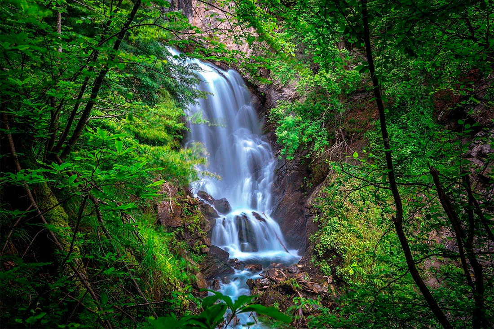
Круглый год один из главных водопадов Ингушетии открыт для посещения. Он находится в Ляжгинском ущелье и образован водами ручья Ляжги. Питают его горные ледники. Высота Ляжгинского водопада – 18 м, он состоит из нескольких каскадов. В чистой голубоватой воде водится форель.К водопаду ведет экологическая тропа, проходящая среди живописных лесных угодий. Дорогу указывают специальные таблички. В окружающих лесах произрастают хвойные деревья, можжевельник, рябина. Водопад популярен и у туристов, и у местных жителей, устраивающих неподалеку пикники.
Адрес: Ляжгинский водопад, Ингушетия, Россия.
Ущелье реки Асса
Данный природный памятник расположен в окрестностях Таргима. Длина реки Асса – 133 км, начинается она в северной части Главного Кавказского хребта. Протекает она по землям Ингушетии, Грузии и Чечни. В речной долине расположено много интересных туристических объектов природного и искусственного происхождения. Один из них – храм Тхаба-Ерды, построенный в VII-IX вв. Не так давно в нем, после почти векового перерыва, возобновились богослужения.Ассинское ущелье входит в состав Джейрахского музея-заповедника, цель которого – сберечь природные богатства региона, сохранить архитектурное и культурное наследие и развивать эко-туризм в Ингушетии.
GPS координаты: 42.807141, 44.933356.
Квартиры посуточно
Недорогое и уютное жилье с гарантией заселения
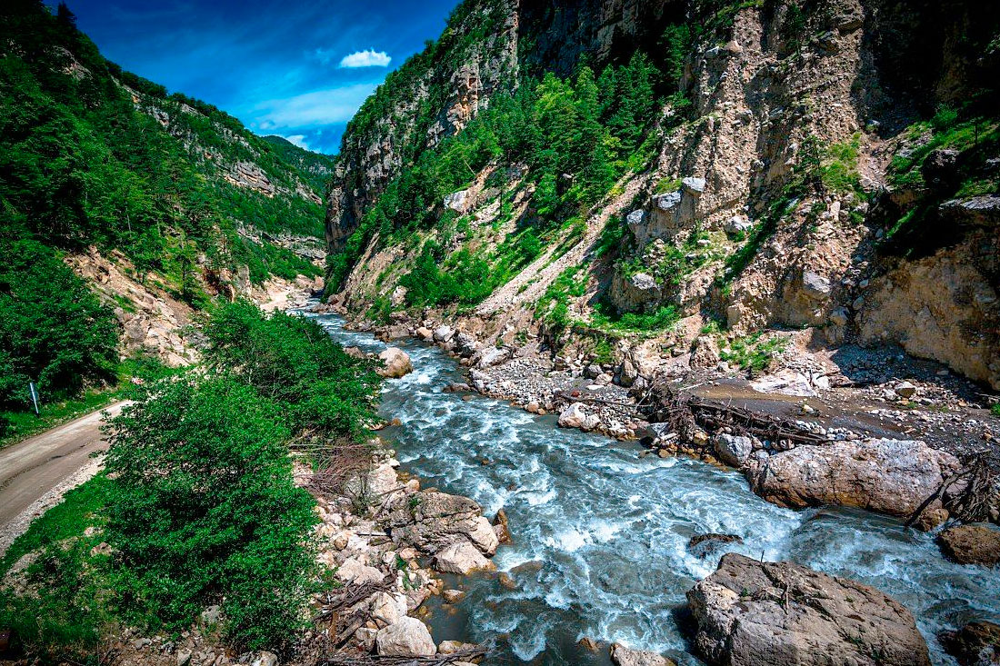
Гора Черехкорт
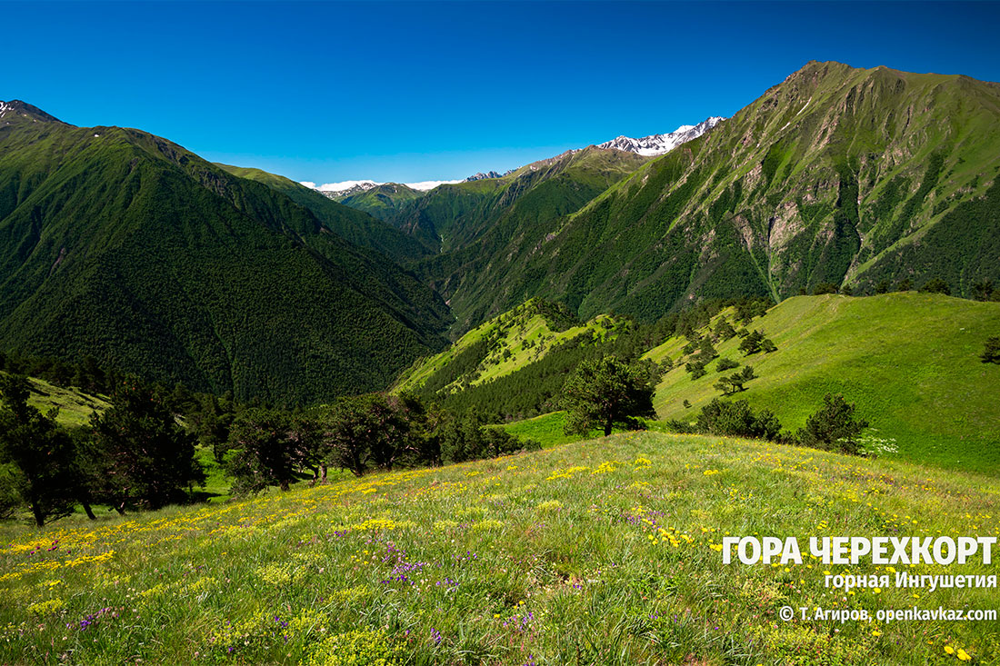
Гора также находится недалеко от границы с Грузией, в Джейрахском районе. Высота Черехкорт составляет 2 230 м. Главная достопримечательность горы – расположенный на ее склоне башенный комплекс Коки. Он включает руины одной боевой башни и нескольких жилых. Строения соединялись между собой оборонительной стеной. В 1910-м поселок Коки со всеми строениями был взорван царской армией, а жителей впоследствии выслали. Через два года изгнанники смогли вернуться в поселение, однако древние строения остались лежать в руинах. На противоположном склоне сохранились руины еще одного комплекса под названием Верхний Коки.
Адрес: Гора Черехкорт, Ингушетия, Россия.
Някист
В Тумгойском ущелье находится обширный башенный поселок – Някист. Он лежит на горной вершине в окружении живописных зеленеющих склонов. До нашего времени уцелело две боевых башни, 11 жилых и три могильника. Построены сооружения были в позднем средневековье. Комплекс связывают воедино оборонительные стены. Строения находятся в удовлетворительном состоянии.
Адрес: Джейрахский район, Республика Ингушетия, Россия.
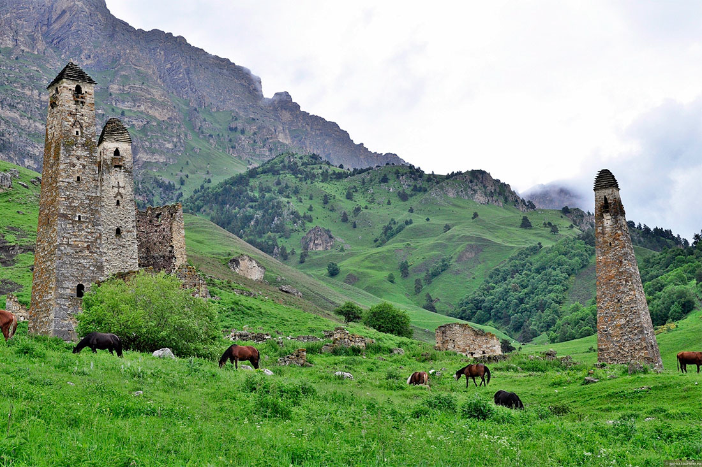
Фалхан
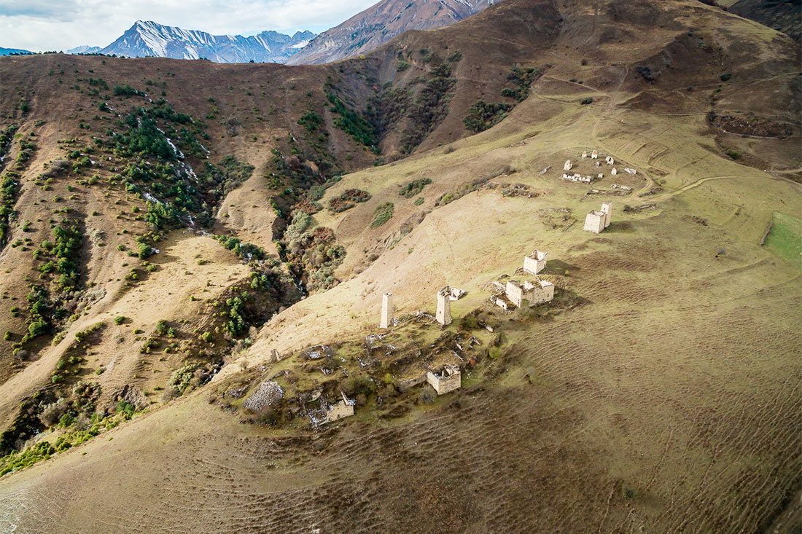
Башенное поселение Фалхан расположено в Джейрахском районе в окружении выпасных лугов. Аул Фалхан – комплекс разрушенных башен, по которым можно проследить вехи его истории. К началу XX в. здесь находились три боевые башни и 12 жилых, действовала мечеть. Сегодня на территории, кроме башен, сохранилось 12 семейных склепов. Считается, что аул был основан примерно в XII-XIII вв. В то время здесь жили племена гамнакан. Жители занимались изготовлением глиняных и деревянных изделий, оружия, добывали полезные ископаемые. В XIX в. аул процветал. Но постепенно люди начали переселяться на равнины. А в 1944-м после депортации поселение Фалхан совсем опустело.
Адрес: Ляжги, Республика Ингушетия, Россия.
Морч
Название этого башенного комплекса в Джейрахском ущелье переводится с ингушского как «саван» или «смерть». Основано поселение в XV-XVI вв. В 1944-м жители поселения были депортированы, а после их реабилитации Морч не был восстановлен. Башни находятся под охраной государства как культурные памятники.Доминирует над поселением высокая боевая башня пирамидальной формы. Также на холме над башенным комплексом расположен небольшой храм-святилище Морч-Сели. Основан он между XVI и XVII в. и неплохо сохранился.
Адрес: Джейрах, Республика Ингушетия, Россия.
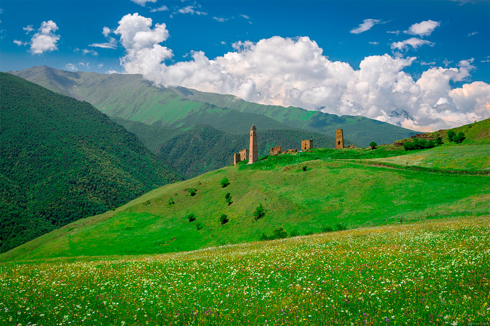
Чулхойское ущелье
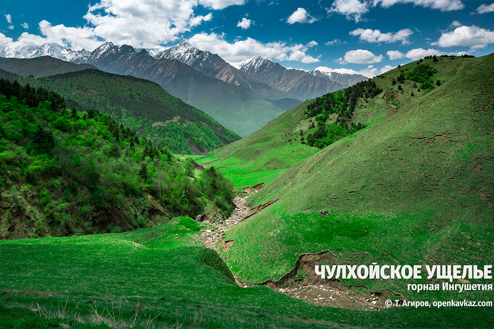
Чулхойское, также Салгинское, ущелье имеет сравнительно небольшие размеры. Несмотря на это, в нем разместилось сразу несколько замковых комплексов с жилыми и оборонительными башнями. Самый известный замковый поселок в ущелье называется Салги и расположен на берегу речи Чулхи. На территории есть две боевые башни, десяток жилых, а также множество пристроек и защитные стены. Строения преимущественно разрушенные. В северной части селения сохранился некрополь.
Адрес: Хяни, Ингушетия, Россия.
Башенный комплекс Ний
Древний ингушский город-селение находится в Джейрахском районе. Территория покинута. Главная достопримечательность поселка Ний – крупный архитектурный комплекс с множеством уцелевших сооружений. Кроме четырех боевых башен, неплохо сохранились 13 жилых и 14 могильников. Территория поселения считается частью музея-заповедника и охраняется государством.
Адрес: “Ний” Башенный комплекс, Республика Ингушетия, Россия.
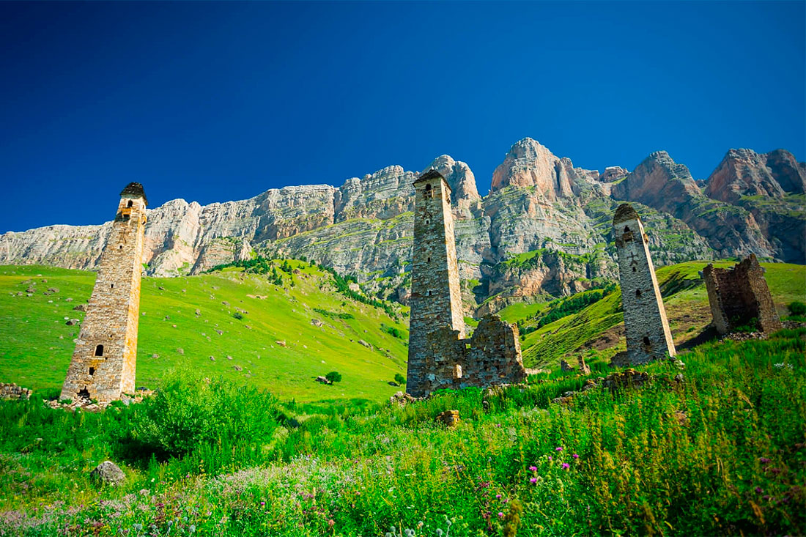
Галгайское ущелье
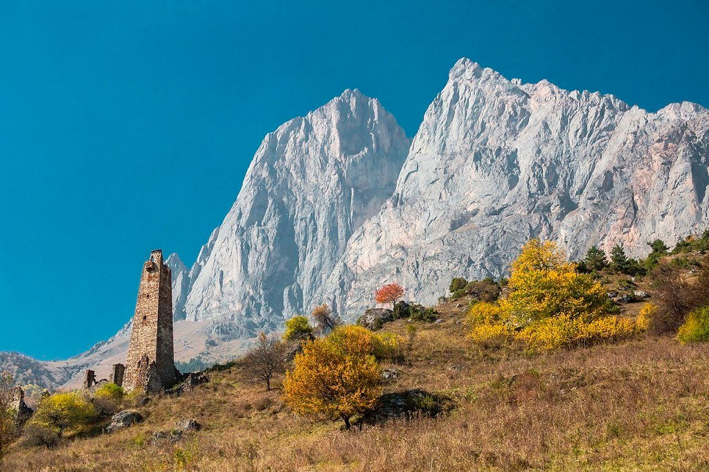
На территории ущелья, на горе Цей-Лоам, находится башенный поселок Дошхакле. Как и большинство населенных пунктов такого плана, он сформировался в период позднего средневековья. Центральное место комплекса занимает боевая башня с шестью этажами, окружают ее жилые сооружения и оборонительная стена. Башня составляла 28 м в высоту, венчала ее ступенчатая крыша пирамидальной формы. Сейчас крыша отсутствует: ее полностью разрушило попадание молнии в середине прошлого века.
Адрес: Джейрах, Республика Ингушетия, Россия.
Джейрах
Основное туристическое направление в Ингушетии – Джейрахский район, где природные красоты соседствуют с памятниками истории и культуры горцев. Административный центр района – село Джейрах. За красоту гор, прекрасную экологию и культурную ценность его иногда именуют «ингушской Швейцарией». Эпитет вполне заслуженный: Кавказ в районе Джейрахского ущелья не уступает живописностью швейцарским Альпам. Но не только глаза и душа отдыхают, впитывая местные красоты, но и дыхательная система: воздух района и здешний климат обладают целебными свойствами.А туристы, неравнодушные к историческому наследию Кавказа, безусловно оценят старинные башенные комплексы, в изобилии разбросанные по окрестностям. Хватает здесь также мест религиозного поклонения, склепов, могильников и других уникальных памятников. Все эти достопримечательности входят в состав Джейрахско-Ассинского заповедника.
Адрес: Джейрах, Ингушетия, Россия.
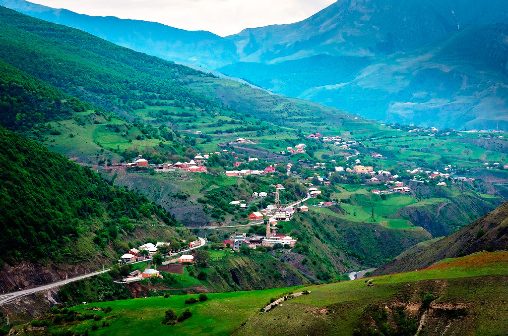
Мемориал памяти и славы в Назрани
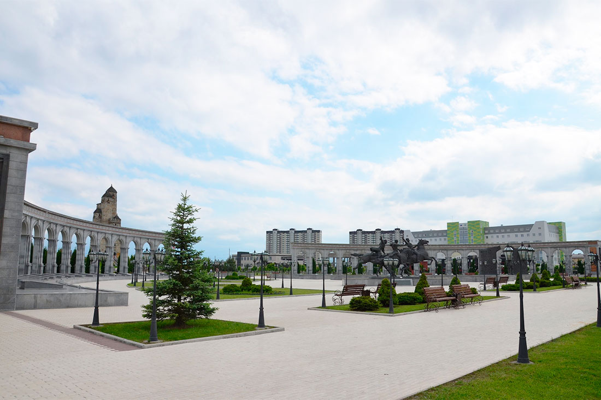
Мемориальный комплекс – то, что обязан увидеть каждый турист в Ингушетии, ее визитная карточка. Строительство его завершилось в 2012-м. Мемориал посвящен ключевым событиям и фигурам на разных этапах существования республики.Комплекс включает несколько объектов. Главный называется мемориал «Девять башен» и посвящен памяти жертв репрессий. В высоту строение составляет 25 м, а каждая башня символизирует один из депортированных народов. Внутри действует музей, где собраны материалы по истории репрессий и военного конфликта с Осетией в 1992-м. Также в комплекс входят колоннады, памятник конному полку, поезд времен депортации ингушей и чеченцев и другие объекты.
Адрес: Мемориал памяти и славы, Назрань, Ингушетия, Россия.
Башня Согласия в Магасе
Башня находится в столице республики, городе Магасе. Она представляет собой искусственную смотровую площадку высотой почти 100 м: это самое высокое здание в республике. Выполнено строение в стиле традиционной ингушской архитектуры, работы продолжались всего год.С впечатляющей высоты туристы могут полюбоваться Магасом, его архитектурой, жилыми районами и центром. Внутри стены башни Согласия украшены прекрасными росписями, посвященными ингушской мифологии. Предполагается открыть в сооружении торговый центр, ресторан и подземную парковку.
Адрес: Башня Согласия, Магас, Ингушетия, Россия.
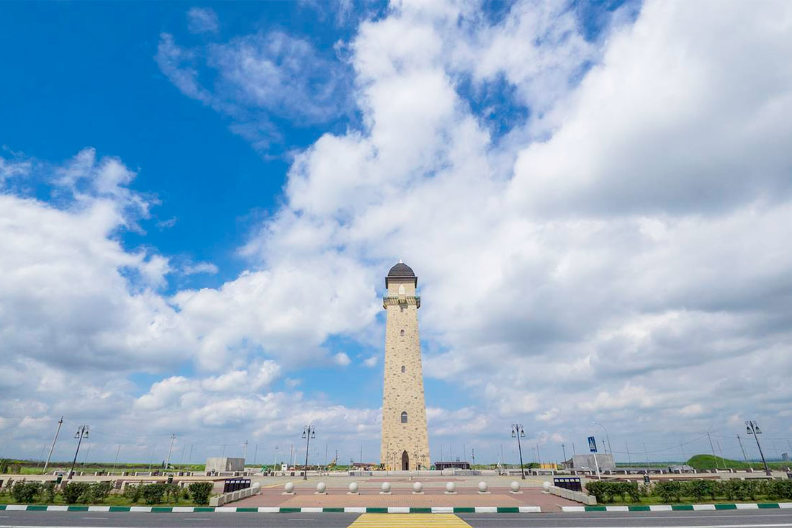
Горный курорт «Армхи»
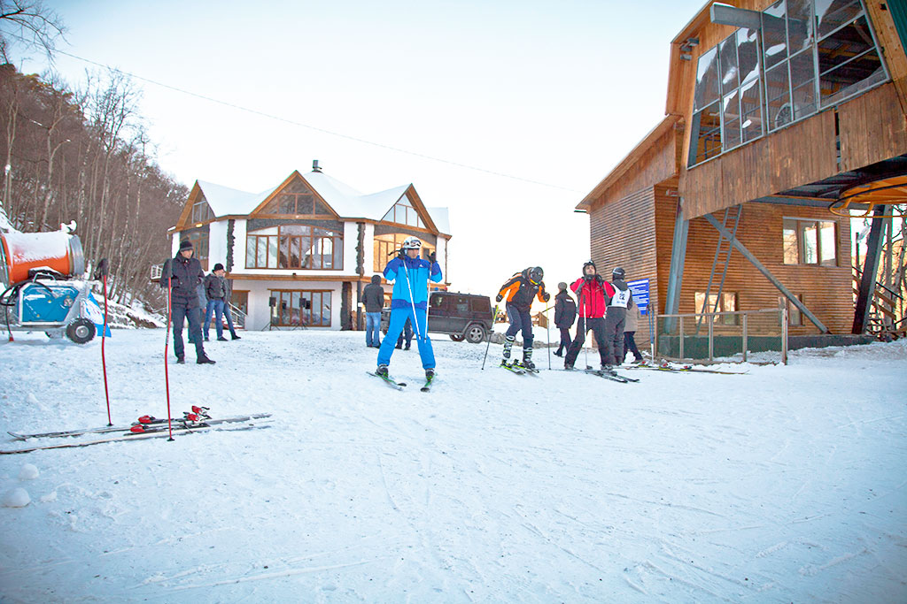
Горный курорт «Армхи».Курорт находится в живописном Джейрахском районе, на высоте 1,5 км. Потрясающая природа и стремительно развивающаяся инфраструктура делают его прекрасным направлением для горнолыжного и оздоровительного отдыха. В «Армхи» проложены две лыжные трассы: 200 м и 1 200 м. Хотя горные склоны не знают недостатка в снеге, лыжный сезон продлевают с помощью искусственного оснежения. На вершину трасс туристов доставляют подъемники. А кататься можно даже после захода солнца.Также в «Армхи» действует самая длинная в стране «лестница здоровья». Она насчитывает 1 780 ступеней и проходит по хвойному лесу с целебным воздухом. С лестницы открываются чудесные виды на горы и старинные башни.
Адрес: Горнолыжный курорт «Армхи», Армхи, Ингушетия, Россия.
Башенный комплекс Фуртоуг и Фуртоугский водопад
Башенный комплекс находится у Джейрахского ущелья и назван по расположенному здесь селу Фуртоуг. До наших дней уцелело основание боевой башни и фрагменты еще пяти строений, построенных примерно в XVII. Поблизости в горах можно найти могильники и скальные убежища. Интересно: считалось, что башню для себя игушский род должен построить за год. Если не укладывались в «смету», то род считался достойным всяческого презрения. Также в окрестностях башенного комплекса можно полюбоваться на Фуртоугский водопад, второй по высоте в Ингушетии. Он расположен на уровне 1 380 м, а в высоту составляет 12 м. В конце XIX в., в ходе геологической экспедиции на Кавказ, водопад посетил знаменитый ученый Менделеев.
Адрес: Фуртогский водопад, Республика Ингушетия, Россия.
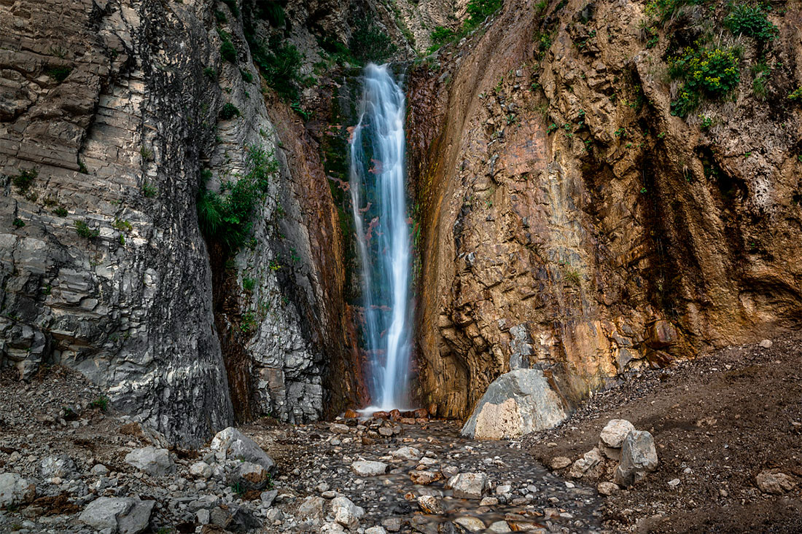
Государственный природный заповедник «Эрзи»
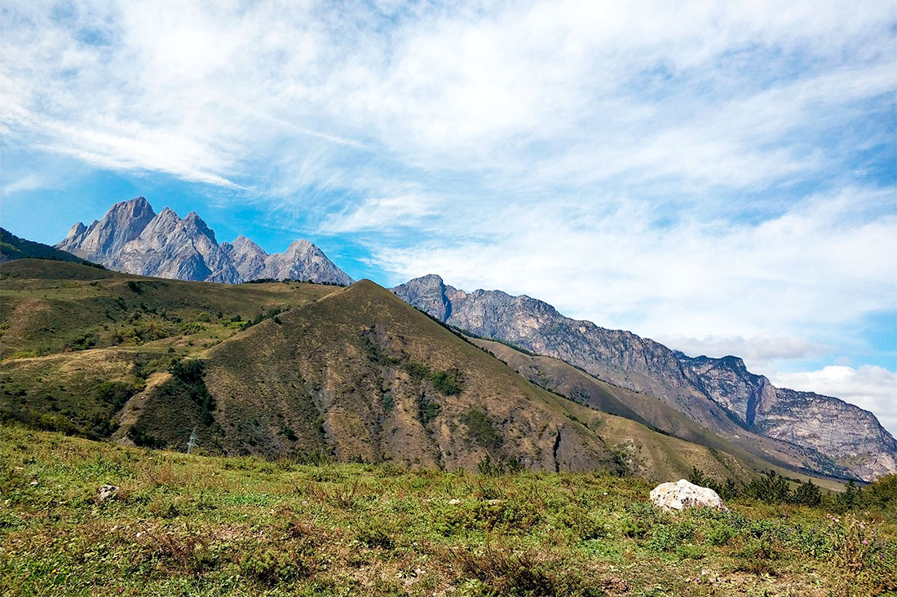
Огромный заповедник «Эрзи» основан в 2000-м и охватывает площадь в 35 тыс. гектаров. Третью часть территории занимают лесные угодья, выше расположен пояс альпийских лугов. В верхних участках, на высоте 3,5 тыс. м, можно увидеть ледники.«Эрзи» располагает богатой флорой и фауной. Здесь встречается до 190 редких и охраняемых видов. Жемчужина заповедника – Ляжгинский водопад и окружающие его сосновые леса. Заповедник интересен не только природными, но и культурно-историческими памятниками. Здесь встречаются древние святилища, где местные жители поклонялись языческим божествам. Есть гробницы, каменные башни, курганы. В одном из башенных комплексов была сделана уникальная археологическая находка – бронзовый Орел Сулеймана, датированный VIII в. н. э. Сегодня он выставлен в Эрмитаже.
Адрес: Государственный природный заповедник Эрзи, Пялинг, Республика Ингушетия, Россия.
Башенный комплекс Таргим
Комплекс назван в соответствии с аулом Джейрахского района. Когда-то он был родовым поселением для нескольких значимых ингушских фамилий, они-то и соорудили могучие замки, сохранившиеся до наших времен. Комплексы включали и оборонительные постройки (воувы), и жилые (галы), а также могильники. Построены они были примерно в XV-XVII вв.В соответствии с традициями ингушской архитектуры, башни строились пирамидальной формы, сужаясь кверху: так их было сложнее атаковать. Обычно они насчитывали пять этажей. Вход располагался на втором этаже, к нему вела приставная лестница, которую в случае угрозы поднимали наверх, подобно подъемному мосту в европейских замках.
Адрес: Башенный комплекс “Таргим”, Таргим, Республика Ингушетия, Россия.
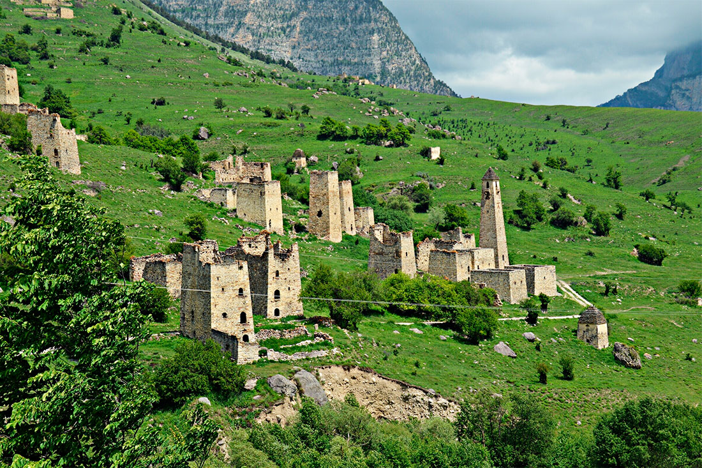
Цей-лоамский комплекс святилищ
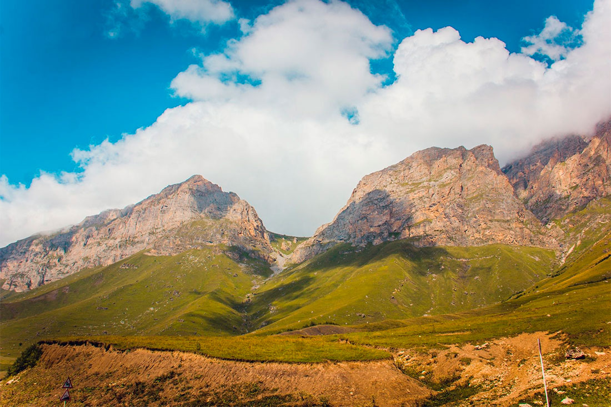
Цей-Лоам считается священной горой Ингушетии. Ее высота – 3 171 м, вершина обычно сокрыта туманами или облаками. Такая переменчивость облика горы окутывала ее мистическим ореолом в глазах древних ингушей. Считалось, что на ней обитает Села, наиболее почитаемое и грозное божество, повелитель громов и молний.В целом, жители горных районов сталкивались с множеством суровых испытаний. Поэтому традиция «населять» горы духами и божествами встречалась повсеместно.На гору Цей-Лоам и поднимались жрецы для совершения ритуальных отправлений. Практиковались и жертвоприношения. На скалах сохранились петроглифы. Сегодня гора – крупный историко-архитектурный заповедник. Ближе к вершине расположена пещера со святилищем. Поблизости находятся и другие следы древних ритуалов.
Адрес: Джейрах, Республика Ингушетия, Россия.